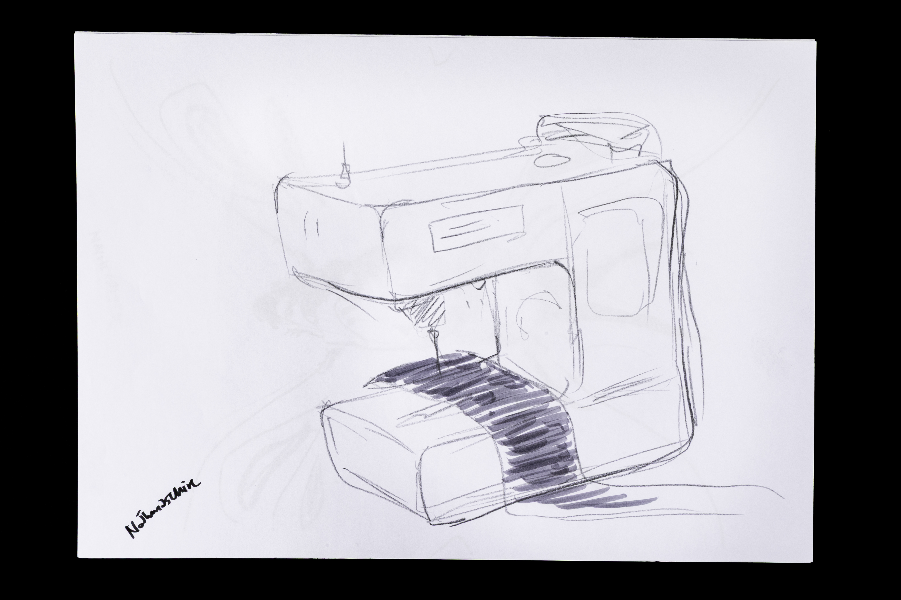
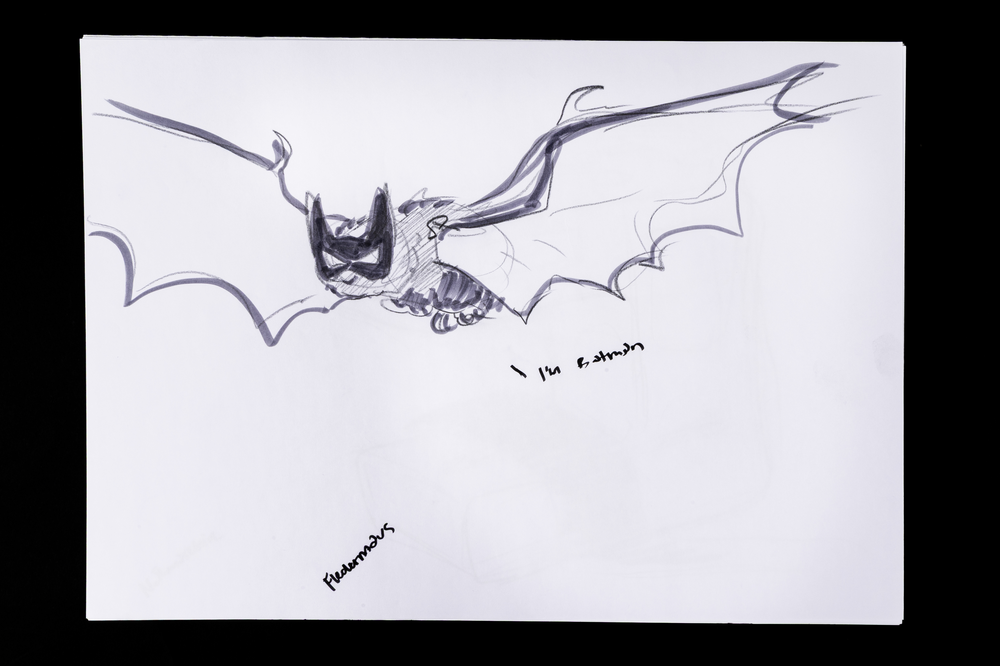
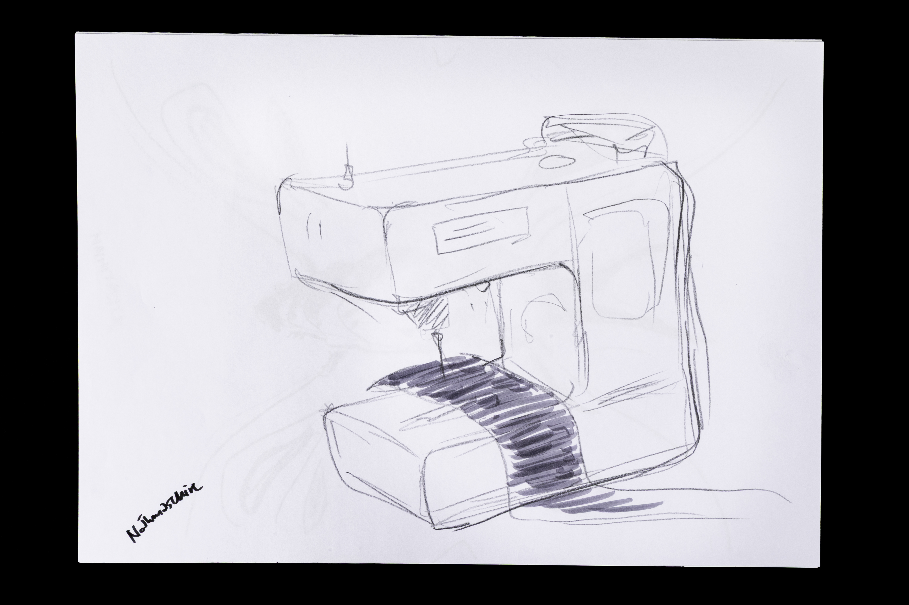
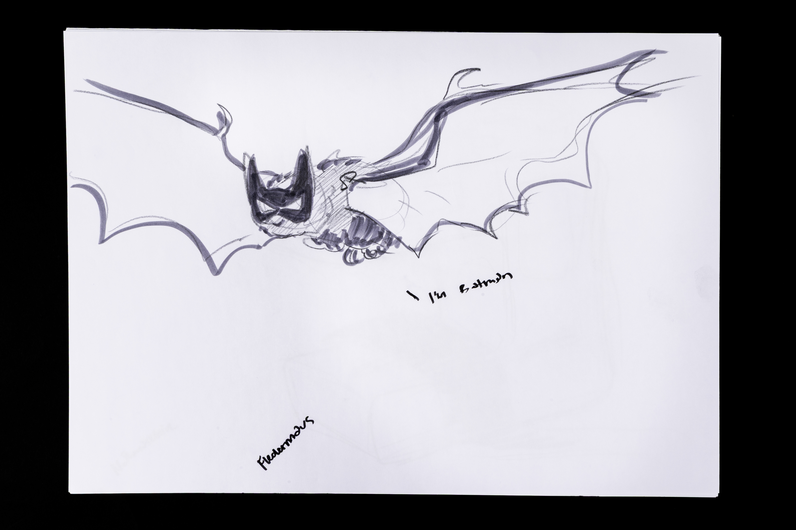

Kopfzeichnen
Dieses Projekt setzt sich mit der Spontanität auseinander sowie einer unmittelbaren visuellen Idee. Die zentrale Aufgabe war es, das spontane und schnelle Denken später in eine dichte und visuell ansprechende Komposition zu übersetzen. Der Prozess basiert auf einem klaren, zweistufigen Vorgehen: Zuerst entstanden rund 70 Einzelmotive, die jeweils unter Zeitdruck, zwei Minuten (etwa pro zufälligen Begriff), frei aus dem Kopf gezeichnet wurden. Die eigentliche kreative Leistung bestand in der Montage des Plakates: Diese Fülle an unterschiedlichen Zeichnungen wurde in einem späteren Schritt im grossen Format zu einem organischen Ganzen zusammengesetzt. Die daraus resultierende visuelle Dichte ist die Konsequenz dieser Zusammensetzung. Die Komposition lädt den Betrachter ein, im visuellen Strom der Zeichnung eine Verbindung zu finden und die rohe, ungefilterte Idee hinter dem Endprodukt zu erleben.